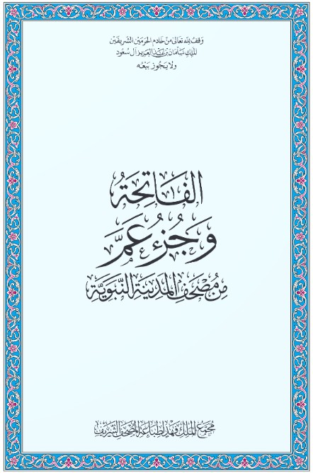

الرئيسية
فهرس القرآن الكريم
القرآن الكريم PDF ▾
مصحف المدينة المنورة
جزء عم
جزء تبارك
جزء قد سمع
ربع يس
القرآن الكريم MP3
اتصل بنا
القرآن الكريم PDF
القرآن الكريم PDF
اختر النسخة المناسبة للقراءة أو التحميل بصيغة PDF
مصحف المدينة المنورة
قراءة وتحميل المصحف
جزء عم

قراءة وتحميل جزء عم
جزء تبارك
قراءة وتحميل جزء تبارك
جزء قد سمع
قراءة وتحميل جزء قد سمع
ربع يس
قراءة وتحميل ربع يس